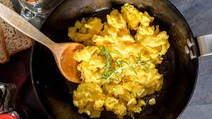

Scrambled eggs

The quickest and tastiest breakfast
Required ingredients
- Eggs (4)
- Butter (30g)
- Cream (30mL)
- Salt & Pepper (To taste)
Instructions
- Heat a large pan on low and add the butter, stir until it begins to melt
- Crack the eggs into the pan and immediately begin whisking them into the butter
- While whisking, add the cream slowly about a spoonful at a time
- Stir the eggs gently until the mixture begins to become firm
- Remove the pan from the heat and let the residual heat in the pan finish the eggs
- Serve and enjoy! :)